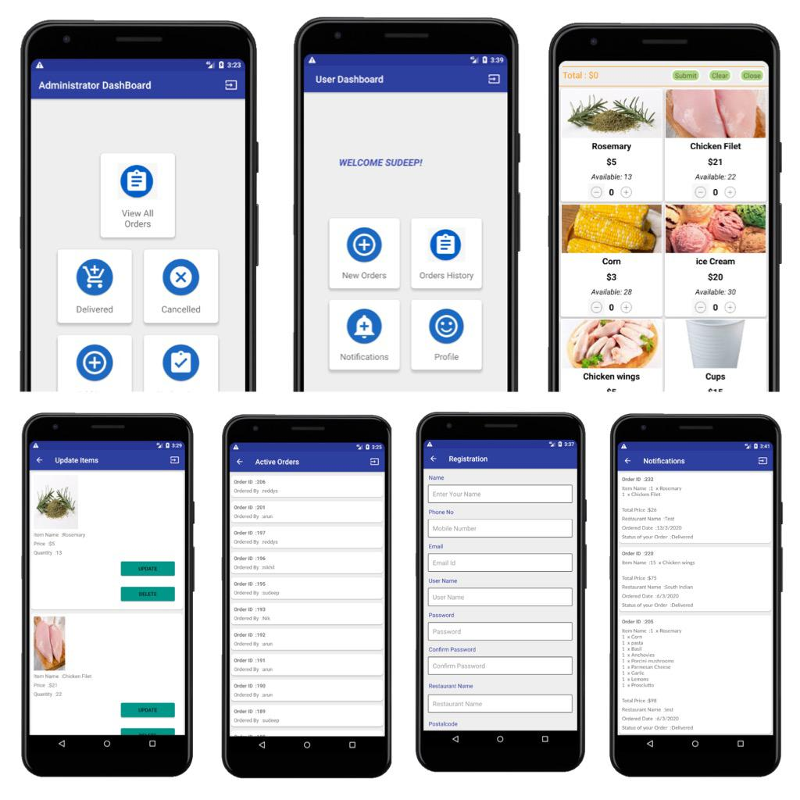

Inventory Management System
This project will consist of the option to order goods, view the list of pending ordered goods and a list of received/delivered goods. This project will fulfill the requirement of inventory and ledger system for restaurants. It will enable admin to manage (CURD operations) inventory items, send special notification, view and manage received orders, view and manage delivered orders and has an automatic invoice generation and sending according to registered email. The main goal of Inventory Ordering and Management is to ensure consistent availability of supplies for Restaurants.
First being the client side where the restaurant can order goods, view the list of pending ordered goods and a list of received/delivered goods. Second is the admin side which can manage (CURD operations) inventory items, send special notification, view and manage received orders, view and manage delivered orders and has an automatic invoice generation and sending according to registered email. Used by the Restaurant to keep track of all orders which have been placed, this component takes care of retrieving and displaying order information, as well as updating orders which have already been processed.